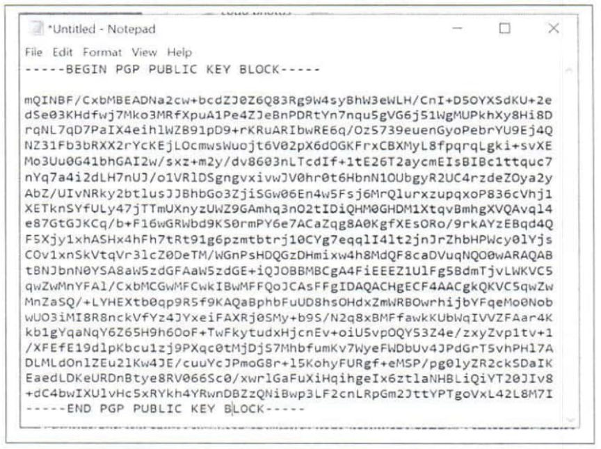
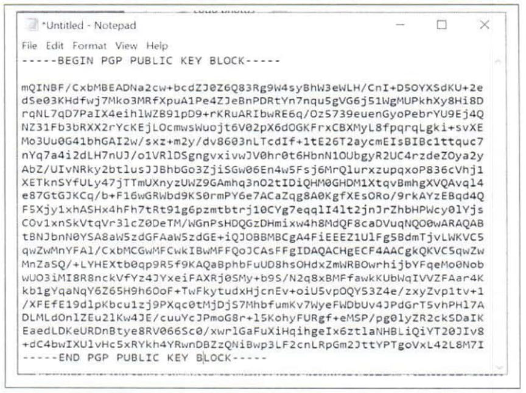

LEO Bulletin: What to Look for During a Search Warrant
~5 min read | Published on 2022-05-01, tagged General-News using 1101 words.
A bulletin published by the Nevada High Intensity Drug Trafficking Area (HIDTA) describes what officers look for during “a search warrant involving dark web and cryptocurrency-related crime.”
The purpose of the bulletin is to provide law enforcement officers with “key indicators of darkweb activity while executing search warrants. This includes information to assist law enforcement in positively identifying cryptocurrency devices, electronic applications, and recovery seeds, which is critical for seizing digital assets.”
In 2020, the Nevada HIDTA reported increased criminal activity involving the darkweb and cryptocurrency. An out-of-state digital forensics group had to be present during the execution of search warrants. Before executing the warrants, law enforcement officers had to be briefed on “cryptocurrency devices, recovery seeds, and any electronics that could be examined for evidentiary value.” However, the bulletin explained, many of the law enforcement officers were not familiar with the “the information and terminology” introduced during the brief. As a result, the Nevada HIDTA published the bulletin titled “Dark Web and Cryptocurrency - What to Look for During a Search Warrant.”
The bulletin contains surprisingly basic information (boring).Hardware Wallets
Hardware wallets are commonly used by cryptocurrency investors and darkweb criminals and are considered the best method to store cryptocurrencies. A hardware wallet is a cryptocurrency wallet that stores the user’s private keys in a secure hardware device. The main principle behind a hardware wallet is to provide full isolation between the private keys and the user’s computer. Private keys are codes only the user has access to and are used to access the user’s crypto assets. Private keys are what give the user ownership of their cryptocurrency. Hardware wallets have an associated web, mobile, and desktop application that enables you to monitor your cryptocurrency addresses and spend your cryptocurrency.
Recovery Seeds and Phrases
A crypto wallet will randomly generate a seed phrase or recovery phrase in an ordered set of 12 or 24 words, sometimes more, depending on the type of wallet used. The crypto wallet also uses the seed phrase to create private keys. The seed phrase is not linked to a particular cryptocurrency and can be used to access an entire portfolio of cryptocurrencies such as Bitcoin, Litecoin, Ethereum, and other crypto-assets. A seed phrase is the only way to access and recover a wallet and all of its contents if a device linked to the wallet is wiped, lost, or stolen**. If possible, recovering wallets and seizing cryptocurrency in an expeditious manner is highly recommended and should be treated with a sense of urgency. Anyone who maintains a copy of the recovery seed or has access to the recovery seed can re-create the wallet without geographical limitations and could easily withdraw the funds.**
Software Wallets
Software wallets come in many forms, each with its own set of unique characteristics and are somehow connected to the internet. Wallets are distinguished by a set of supported cryptocurrencies and software platforms such as Windows, Mac, and other operating systems. Software wallets are available in three forms - desktop, mobile and online.<br>Desktop wallets are computer programs that store cryptocurrencies on a PC so that their information is not accessible to anyone but the user. Private keys are typically kept on a desktop.
Mobile wallets come in a smartphone app and are easily accessible to their users at any time. However, mobile devices are vulnerable to various malware and can be easily lost.<br>Online wallets are web-based wallets that can be accessed anywhere and on any device. This makes them more convenient for accessing funds, and their private keys are stored by website owners rather than locally on user devices.Examples of Wallets and Exchanges
Cryptocurrencies
Bitcoin (BTC) Monero (XMR) Litecoin (LTC) Ethereum (ETH) PAX Standard (PAX) Dogecoin (DOGE) Algory (ALG) (Really?) Tether (USDT) Software Wallets
Electrum Exodus Coinomi Monero GUI Cake BRD Blockchain Mycelium Exchange Wallets
Coinbase Kraken Crypto.com Binance Bitstamp The Nevada HIDTA provided examples of the most common cryptocurrencies, wallets, and exchanges encountered during their investigations.Examples of “Darknet Usage”
Browsers
Tor Red Onion Tor VPN
Nord Proton VPN Tunnel Bear Surfshark VPNs as evidence of “Darknet Usage”?
Examples of Dark Net Market Links
Pretty Good Privacy (PGP) is an encryption system used for both sending and receiving encrypted emails and encrypting sensitive files. PGP encryption is required on most popular darknet markets such as White House Market. If messages are not encrypted using PGP encryption, darknet markets will not allow users to send and receive messages or purchase illicit commodities.

During the investigation into a prolific Xanax vendor on AlphaBay, law enforcement officers raided the defendant’s house and found loads of incriminating evidence. They seized multiple cryptocurrency wallets, including a Trezor cold storage wallet containing almost 200 Bitcoin. Investigators could not find the seed phrase for at least one of the wallets they had discovered.
The case began with an unrelated arrest of one of the defendant’s friends in a different state. Investigators also used the defendant’s (at the time) girlfriend’s drug habit to get a foot in the door for probable cause. I can remember that the DEA had at least four of the defendant’s acquaintances making statements. It seems likely that the actual number of loose lips is higher than four. After some time, investigators learned that the defendant had given the seed phrase to a friend. The friend had allegedly promised to keep the seed phrase no matter the cost. Law enforcement officers detained the person who had the seed phrase and threatened him with prison time. The friend gave up the seed phrase.
In the bulletin, the Nevada HIDTA wrote, “anyone who maintains a copy of the recovery seed or has access to the recovery seed can re-create the wallet without geographical limitations and could easily withdraw the funds.” As the case described above demonstrates, even if someone were to leave someone else with the only copy of the seed phrase, law enforcement will somehow sniff it out. If any readers know of a case where someone moved the funds out of a wallet seized by law enforcement, please let me know. I would love to read about their frantic attempts to recover the “stolen” funds.
Dark Web and Cryptocurrency - What to Look for During a Search Warrant pdf html html2
P.S. Whatever vendor sold “listing: 70209 7 grams Cocaine - Uncut Brick” and sends the following message to their customers is under investigation (and selling to the feds):
[img=]A decrypted message on White House Market from a Nevada HIDTA investigation in 2021.[/img]
The purpose of the bulletin is to provide law enforcement officers with “key indicators of darkweb activity while executing search warrants. This includes information to assist law enforcement in positively identifying cryptocurrency devices, electronic applications, and recovery seeds, which is critical for seizing digital assets.”
In 2020, the Nevada HIDTA reported increased criminal activity involving the darkweb and cryptocurrency. An out-of-state digital forensics group had to be present during the execution of search warrants. Before executing the warrants, law enforcement officers had to be briefed on “cryptocurrency devices, recovery seeds, and any electronics that could be examined for evidentiary value.” However, the bulletin explained, many of the law enforcement officers were not familiar with the “the information and terminology” introduced during the brief. As a result, the Nevada HIDTA published the bulletin titled “Dark Web and Cryptocurrency - What to Look for During a Search Warrant.”
The bulletin contains surprisingly basic information (boring).Hardware Wallets
Hardware wallets are commonly used by cryptocurrency investors and darkweb criminals and are considered the best method to store cryptocurrencies. A hardware wallet is a cryptocurrency wallet that stores the user’s private keys in a secure hardware device. The main principle behind a hardware wallet is to provide full isolation between the private keys and the user’s computer. Private keys are codes only the user has access to and are used to access the user’s crypto assets. Private keys are what give the user ownership of their cryptocurrency. Hardware wallets have an associated web, mobile, and desktop application that enables you to monitor your cryptocurrency addresses and spend your cryptocurrency.
Seed, Trezor and Ledger
Recovery Seeds and Phrases
A crypto wallet will randomly generate a seed phrase or recovery phrase in an ordered set of 12 or 24 words, sometimes more, depending on the type of wallet used. The crypto wallet also uses the seed phrase to create private keys. The seed phrase is not linked to a particular cryptocurrency and can be used to access an entire portfolio of cryptocurrencies such as Bitcoin, Litecoin, Ethereum, and other crypto-assets. A seed phrase is the only way to access and recover a wallet and all of its contents if a device linked to the wallet is wiped, lost, or stolen**. If possible, recovering wallets and seizing cryptocurrency in an expeditious manner is highly recommended and should be treated with a sense of urgency. Anyone who maintains a copy of the recovery seed or has access to the recovery seed can re-create the wallet without geographical limitations and could easily withdraw the funds.**
Stock pictures of recovery seed phrases
Software Wallets
Software wallets come in many forms, each with its own set of unique characteristics and are somehow connected to the internet. Wallets are distinguished by a set of supported cryptocurrencies and software platforms such as Windows, Mac, and other operating systems. Software wallets are available in three forms - desktop, mobile and online.<br>Desktop wallets are computer programs that store cryptocurrencies on a PC so that their information is not accessible to anyone but the user. Private keys are typically kept on a desktop.
Mobile wallets come in a smartphone app and are easily accessible to their users at any time. However, mobile devices are vulnerable to various malware and can be easily lost.<br>Online wallets are web-based wallets that can be accessed anywhere and on any device. This makes them more convenient for accessing funds, and their private keys are stored by website owners rather than locally on user devices.Examples of Wallets and Exchanges
Cryptocurrencies
Browsers
Examples of Dark Net Market Links
-__-
Pretty Good Privacy (PGP) is an encryption system used for both sending and receiving encrypted emails and encrypting sensitive files. PGP encryption is required on most popular darknet markets such as White House Market. If messages are not encrypted using PGP encryption, darknet markets will not allow users to send and receive messages or purchase illicit commodities.

A public key used by Nevada HIDTA during an investigation in August 2021. I have not OCRd it.
During the investigation into a prolific Xanax vendor on AlphaBay, law enforcement officers raided the defendant’s house and found loads of incriminating evidence. They seized multiple cryptocurrency wallets, including a Trezor cold storage wallet containing almost 200 Bitcoin. Investigators could not find the seed phrase for at least one of the wallets they had discovered.
The case began with an unrelated arrest of one of the defendant’s friends in a different state. Investigators also used the defendant’s (at the time) girlfriend’s drug habit to get a foot in the door for probable cause. I can remember that the DEA had at least four of the defendant’s acquaintances making statements. It seems likely that the actual number of loose lips is higher than four. After some time, investigators learned that the defendant had given the seed phrase to a friend. The friend had allegedly promised to keep the seed phrase no matter the cost. Law enforcement officers detained the person who had the seed phrase and threatened him with prison time. The friend gave up the seed phrase.
In the bulletin, the Nevada HIDTA wrote, “anyone who maintains a copy of the recovery seed or has access to the recovery seed can re-create the wallet without geographical limitations and could easily withdraw the funds.” As the case described above demonstrates, even if someone were to leave someone else with the only copy of the seed phrase, law enforcement will somehow sniff it out. If any readers know of a case where someone moved the funds out of a wallet seized by law enforcement, please let me know. I would love to read about their frantic attempts to recover the “stolen” funds.
Dark Web and Cryptocurrency - What to Look for During a Search Warrant pdf html html2
P.S. Whatever vendor sold “listing: 70209 7 grams Cocaine - Uncut Brick” and sends the following message to their customers is under investigation (and selling to the feds):
[img=]A decrypted message on White House Market from a Nevada HIDTA investigation in 2021.[/img]